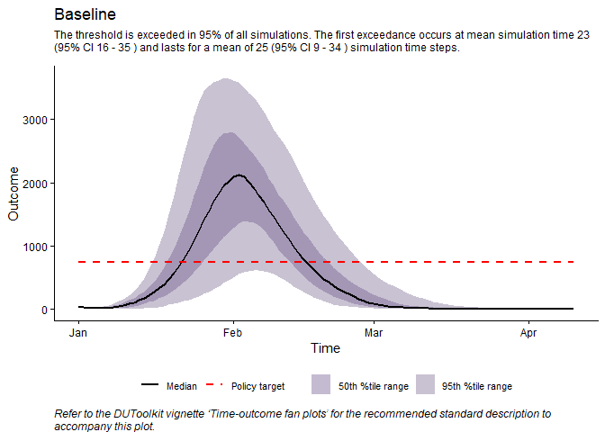
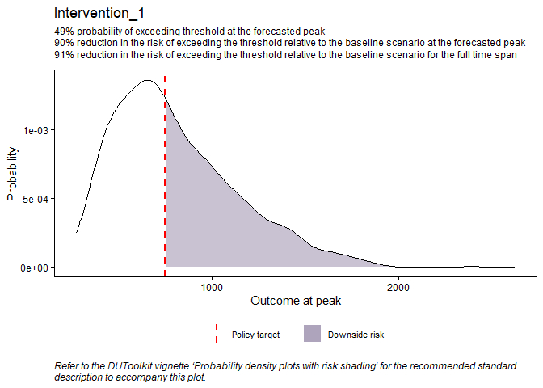
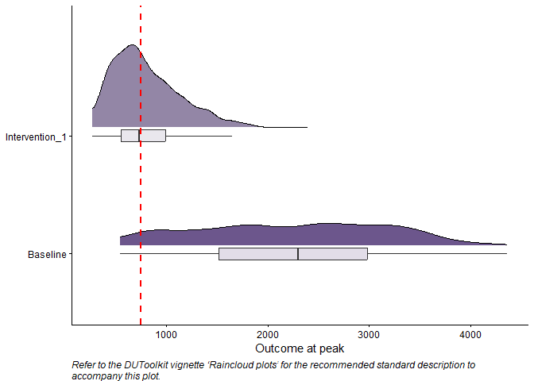
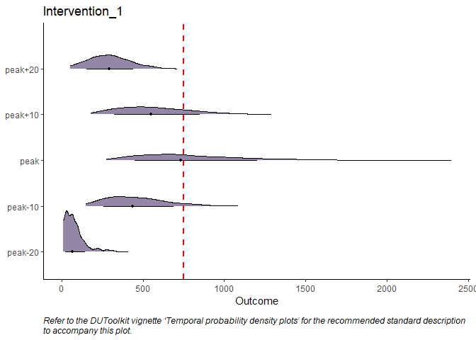

DUToolkit
The DUToolkit package provides a suite of tools and visualization for the characterization, estimation, and communication of parameter uncertainty and decision risk. The package is designed to evaluate the impact of policy alternatives on outcomes compared to baseline (i.e., counterfactual analysis), leveraging model outputs from uncertainty analysis.
During public health crises such as the COVID-19 pandemic, decision-makers relied on models to predict and estimate the impact of various policy alternatives on health outcomes. Often, there is a high degree of uncertainty in the evidence base underpinning these models. When there is increased uncertainty, the risk of selecting a policy option that does not align with the intended policy objective also increases; we term this decision risk. Even when models adequately capture uncertainty, the tools used to communicate their outcomes, underlying uncertainty, and the associated decision risk are important to mitigate decisions to adopt sub-optimal policies and/or critical health technologies.
Installation
You can install the ‘DUToolkit’ package from CRAN with the following command in the console:
#> Installing package into 'C:/Users/mwiggins/AppData/Local/Temp/RtmpQvV8Ba/temp_libpath404c71cf3415'
#> (as 'lib' is unspecified)
#> Warning: package 'DUToolkit' is not available for this version of R
#>
#> A version of this package for your version of R might be available elsewhere,
#> see the ideas at
#> https://cran.r-project.org/doc/manuals/r-patched/R-admin.html#Installing-packagesUsage

#> N outcome i_time
#> 1 1 4207.443 2021-01-26
#> 2 2 1681.521 2021-02-01
#> 3 3 2539.177 2021-02-04
#> 4 4 2969.721 2021-01-31
#> 5 5 3073.741 2021-02-05
#> 6 6 1520.144 2021-02-08
#> 750 1000 2000
#> 0.9494 0.8887 0.5895
#> Baseline Intervention 1
#> Risk "1501" "157"
#> Policy risk impact "-" "-90%"
#> time outcome
#> 1 peak 4207.443
#> 2 peak 1681.521
#> 3 peak 2539.177
#> 4 peak 2969.721
#> 5 peak 3073.741
#> 6 peak 1520.144